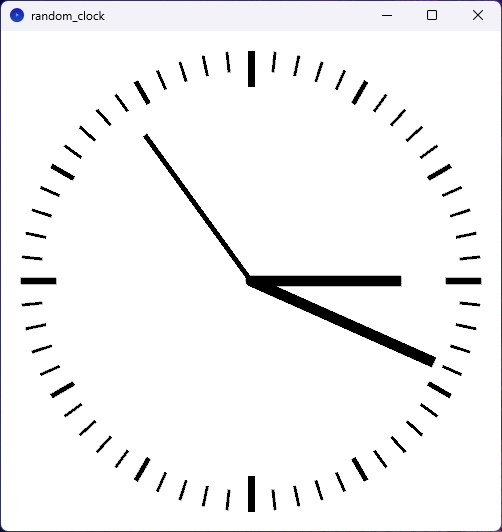
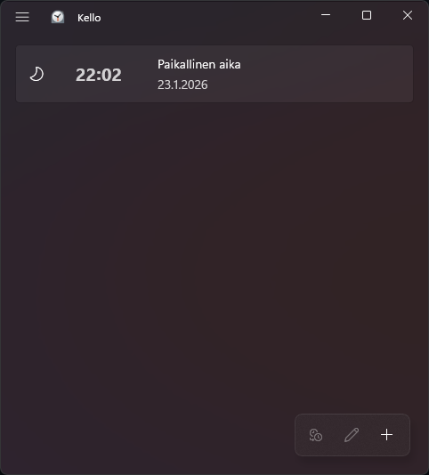
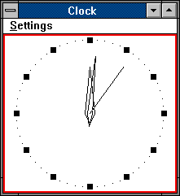

Tales of a Clockmaker
View the Random Clock in OpenProcessing
Repositories: Random Clock (the prototype), Godot Clock (nicer version, in progress)
Tales of a Clock Maker

I programmed some analog clocks. It might not sound very impressive, but somehow, it turned out that this was actually a good use of my time!
This is kind of going to be another one of my ungodly long rants about things that should be easy, but which are actually deceptively complicated. For another one of those, I recommend reading my tiny short ramble about importing photos from SD cards.
Why would anyone make an analog clock, anyway?
In July 17, 2024, I realised that
- I was depressed that particular night and
- I hadn’t written an analog clock before. To heck with it, it had to be done.
So I started another one of those projects of mine in which I combat depression by doing some random interesting coding challenge and post about it to social media when I’m done.
And I did make it, and I did post it. The original version made in the dead of the night was untested and had a brainfart, so I fixed it the next day. The end?
To make clocks is to court peril
Well, actually, there was a third bit of motivation in making this clock.
Long ago, Apple screwed up. Wrath of Switzerland descended upon them, because they copied Swiss railway clocks. In my depression, I though it was highly tragicomical that Apple screwed up their clocks. How do you screw up making a clock? That’s sad.
But, in 2024, I was noting that someone else had screwed up making a clock.

Remember when Windows had a good clock? I hadn’t thought of looking at analog clocks on computers in a while, but I was kind of surprised that since last time when I remember looking at the analog clock on Windows…

…apparently it turns out Windows 11 clock no longer has an analog clock mode at all. In fact, you can’t even make Windows clock to show seconds! Android, while not having analog clock either, at least does show seconds if you ask it really nicely.
Also, at the time, Windows Update and Store were somehow messed up on my computer and apps got stuck updating for long periods of time. And Clock needed some updates. Why does a Clock need frequent updates. Why. If I’m to estimate Microsoft’s next move, they’ll probably add Copilot to it next so it can guess the time. (…Eh, I shouldn’t give them ideas.)
The biggest motivation
So why do I need an analog clock? I had an actual real practical reason to make an analog clock app of my own.
My weird brain wants an analog clock, with a second hand. Or, an analog clock plus a digital clock.
I need an analog clock so I can accurately set time manually on my devices that don’t have Internet time sync. Just wait for the second hand go to the top of the minute and hit the set button. Easy peasy. Can do that with a digital clock with seconds display, but it’s less clear. Can’t mess it up with an analog clock though. I’ve been trained.
Internet time sync was almost as big mistake as IoT in general
A prime example of these kind of devices are my cameras. Setting the clocks manually is a frequent hassle at the daylight saving time change, and some of these clocks also have a significant amount of drift so I prefer to set the time every time I charge the batteries.
Well, some of the cameras theoretically could sync times through apps over Bluetooth, but I don’t keep Bluetooth on on the cameras because I prefer the batteries to stay at usable levels for more than a day. Also, the apps are a bit hassley. (For Nikon, at least.) For some cameras, the apps are just janky. (People straight up told me not to use the Ricoh GR III app.) And, well, some apps can go straight to hell as far as I care. (GoPro replaced the GoPro app with “Quik”, which has some subscription nonsense and, oh, my camera is apparently obsolete now. How do they consider a camera obsolete? How does that even happen, this alien concept of considering cameras obsolete? Just asking as a Nikon fangirl… Oh well, at least they didn’t take away the ability to set the time manually.)
So in summary: I made the clocks to serve a very practical need of having an analog clock around to set the time manually on some of my devices. And the fact that major OSes didn’t have analog clocks was just sad. The closest I had was Android, and even that needed me constantly prodding my phone’s screen to avoid making the phone go sleep.
Random Clock (the original prototype)
So, the old prototype was made in Processing in July 17 to 18, 2024.
In January 23, 2026, I ported it to p5.js, and it’s available for viewing in browser at OpenProcessing.
Topics to cover here in the future:
- Educational bit: mechanics of how the clock works
- Perils of depression coding and releasing stuff in random Mastodon posts
The original Processing version, and its p5.js port, is available under the MIT License.
Godot Clock
Currently, I’m writing a new clock - that is also a little bit more useful - in the Godot Engine.
Windows build is available via Codeberg, other platforms can open and run the project in Godot Engine. As of writing, the bleeding edge code is confirmed to work with Godot 4.5.
Preferably, the tagged releases should be used. I try to not to push entirely broken versions to the repository too, so chances are the bleeding edge version in git will also work the same way.
A few niceties are being currently worked on.
Some of the topics I’ll cover in the future:
- Mechanics of how the analog clock works this time
- Making seven-segment displays, oh my!
- Theory and practice of implementing Radio pips: how they work, how to implement them, and how to produce the sounds sensibly
GDScript code and Godot scene data released under the MIT license. Certain data files are Public Domain under CC0.